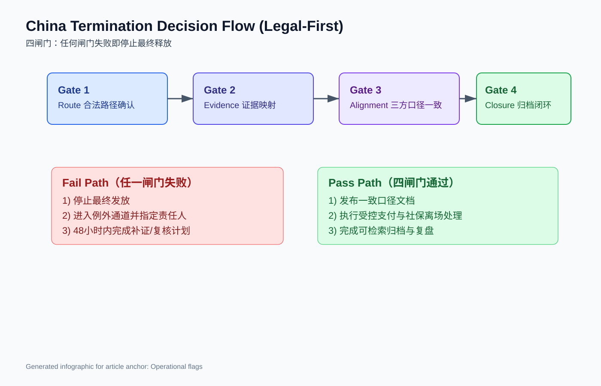

In China Employee Termination in 2026: Speed Wins the Week, Compliance Protects the Year
Foreign employers can still move fast in China terminations—but only if they accept one tension up front: execution speed creates short-term operating gain, while legal-route mistakes can create 12-month dispute and compliance drag.
What changed
The legal baseline did not suddenly loosen in 2026; what changed is cross-border pressure to “close cases this cycle” while evidence quality lags.
For non-China teams, the framework is still route-based and number-bound, not narrative-based:
- 30-day written notice is a hard anchor in one common route (Labor Contract Law, Art. 40).
- Economic compensation is generally 1 month salary per full service year (Art. 47).
- 6+ months and <1 year = 1 year for compensation counting (Art. 47).
- <6 months = 0.5 month compensation (Art. 47).
- High-earner compensation base is typically capped at 3x local average monthly wage, with a 12-year counting cap (Art. 47).
- Probation upper limits are 1/2/6 months depending on contract length bands (Art. 19).
- Labor-dispute arbitration filing is generally within 1 year.
- Arbitration period is commonly 45 days, extendable by 15 days for complexity.

Anchor用途：市场压力背景（Why now）。来源：Our World in Data。
Bottom line: if your internal workflow starts with payroll cut-off and only later checks legal route, you are operating in reverse.
Cost & risk frames
The visible cheapest path is often not the lowest-risk path.
A “fast close” decision may save 1 payroll cycle, then lose months in arbitration prep, legal review, and leadership rework. For board/CFO readers, use threshold discipline:
- Route confidence <80%: no contested release.
- Evidence completeness <90% on core facts: hold and escalate.
- Legal/HR/payroll narrative alignment <100%: block employee-facing output.
- Unresolved local-interpretation questions within 48 hours of release: move to exception lane.

Anchor用途：用工结构与管理压力背景（Cost frame）。来源：Our World in Data。

Anchor用途：把“快/慢”决策改成“风险调整后成本”决策。生成信息图（本地SVG）。
Operational flags
先法务后操作。固定4个闸门，任何一项失败都不应进入最终发放：
- Route gate：一个合法路径、一个审批结论、一个责任人。
- Evidence gate：每个关键事实可映射到可提取记录。
- Alignment gate：法务口径、员工沟通、薪资标签一致。
- Closure gate：社保/离职归档状态与检索责任人明确。
信号灯标准：
- Red：路径冲突、关键证据缺失、地方实践未确认。停止最终释放。
- Amber：路径稳定但证据或口径未完全对齐。仅限受控处理。
- Green：四闸门全部通过，可审计、可复核、可解释。

Anchor用途：把抽象法务要求转为可执行流程。生成信息图（本地SVG）。
Why this matters now
Why now, not later:
- 预算收缩期里，组织更容易把“本月速度”误当成“全年效率”。
- 跨国管理层越来越把用工退出事件视为治理能力信号，而非HR后台事务。
- 一次处理失真会同时触发三条成本线：法律、薪资修正、管理层注意力。
对不熟悉中国的团队，最务实结论是：速度可以优化月度报表，合规路径才能保护年度经营确定性。
Deliverables CTA
本周可直接落地的3个交付物：
- CSV报价表：不同离职场景的成本-风险分层与建议路径。
- 一页提案模板：面向董事会/区域管理层的 legal-first 决策页。
- 四闸门检查清单：route/evidence/alignment/closure 预发布控制单。
图片清单
- 图1：China unemployment rate trend
用途：解释市场压力与“速度冲动”背景
来源/生成：外部可引用图（Our World in Data）
URL/路径：https://ourworldindata.org/grapher/unemployment-rate.png?country=~CHN
可用性状态：可访问（HTTP 200）
- 图2：China labor-force participation trend
用途：补充劳动力结构变化与管理复杂度背景
来源/生成：外部可引用图（Our World in Data）
URL/路径：https://ourworldindata.org/grapher/labor-force-participation-rate.png?country=~CHN
可用性状态：可访问（HTTP 200）
- 图3：Termination cost-risk matrix infographic
用途：对应 Cost & risk frames 的决策阈值可视化
来源/生成：新生成信息图（本地SVG）
URL/路径：./termination-cost-risk-matrix.svg
可用性状态：已生成（本地可用）
- 图4：Termination decision-flow infographic
用途：对应 Operational flags 的四闸门流程可视化
来源/生成：新生成信息图（本地SVG）
URL/路径：./termination-decision-flow.svg
可用性状态：已生成（本地可用）
---
Sources
- National People’s Congress. Labor Contract Law of the PRC (official English text). http://www.npc.gov.cn/zgrdw/englishnpc/Law/2007-12/13/content_1384064.htm
- State Council Gazette. Regulations for the Implementation of the Labor Contract Law (Decree No. 535). https://www.gov.cn/gongbao/content/2008/content_1124615.htm
- Supreme People’s Court. Interpretation on Labor Dispute Cases (I). https://www.court.gov.cn/fabu/xiangqing/243981.html
- National People’s Congress. Social Insurance Law of the PRC (official English text). http://www.npc.gov.cn/zgrdw/englishnpc/Law/2009-02/20/content_1471106.htm
- Law of the PRC on Mediation and Arbitration of Labor Disputes (reference text). https://www.pkulaw.com/en_law/3bb03a34f9f18d45bdfb.html
- China Briefing (Dezan Shira & Associates). Employee Termination in China: A Guide for Employers. https://www.china-briefing.com/news/employee-termination-in-china/
Need local employment support in China?
If you need a compliance-first partner for hiring, payroll, and risk controls in China, China-Payroll.com can help evaluate the right setup.
Image Prompt Pack
Create a 16:9 hero image for article title: 'In China Employee Termination in 2026: Speed Wins the Week, Compliance Protects the Year'. Scene: global operations team evaluating workforce model options for China market entry. Include motifs: decision matrix, or…